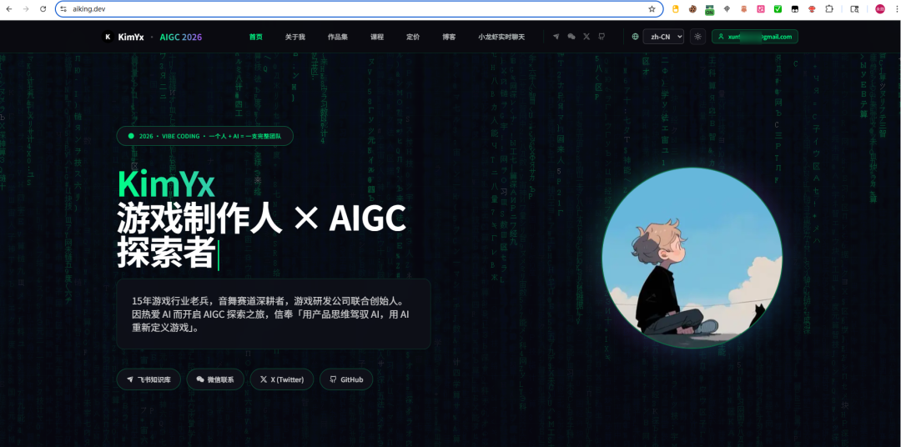
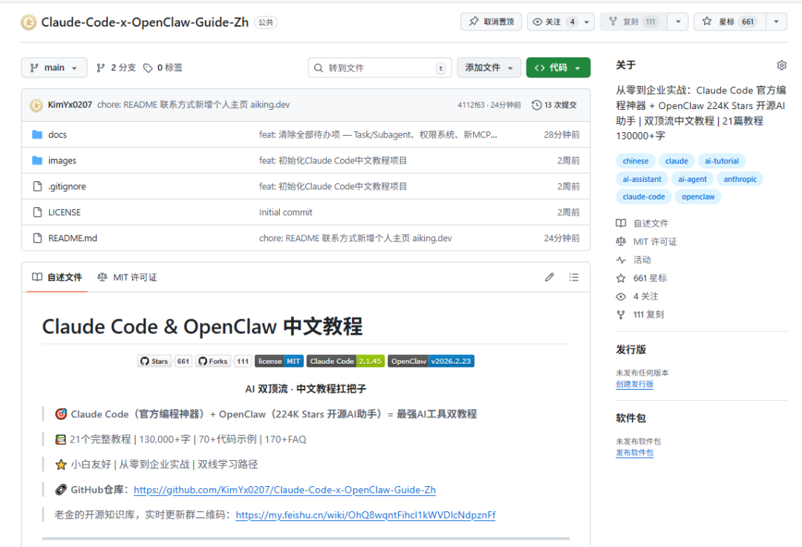
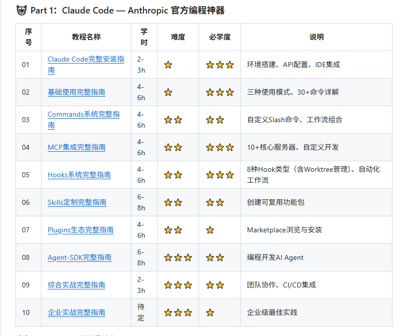
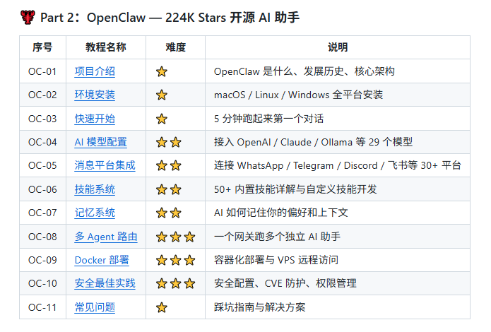

加我进AI讨论学习群，公众号右下角“联系方式”
文末有老金的 开源知识库地址·全免费
春节那几天，老金我干了一件自己都没想到的事。
不懂代码，不懂英语，对着电脑说了几天话，喷出来一个完整网站。
前后端分离、国际化、第三方登录、第三方支付、数据库、后台管理，全有。
不信你自己去看：aiking.dev

老金我爸妈都觉得不可思议："你啥时候会写代码了？"
老金我说："我不会，但我有武器和助理。"
武器是 Claude Code，助理是 OpenClaw。
这两个工具，老金我之前分别写过教程。
但用了两个月之后，老金我发现一个事儿——它们分开用，只能发挥一半的威力。
熟悉老金的都知道，我曾介绍过自己，挂名3家公司，主管游戏研发的各个项目，基本上没时间在自己工位上。
现在有了这些，我不光能把我每天的工作进行的有条理，还能自动整理出比我手写好一万倍的报告。
最可怕的，是它还能帮我去做执行产出。
要知道，我是个策划出身，相比管理，我更喜欢创造内容。
这俩已经是我最近必不可缺的两个工具了。
所以老金我做了一个决定：把两个教程合并成一个。
原来的 Claude-Code-Guide-Zh，现在更名为 Claude-Code-x-OpenClaw-Guide-Zh。
10万字教程全面升级，Claude Code版本更新到最新，新增OpenClaw完整中文教程。

这次更新了什么
先说数据，这次不是小修小补。
Claude Code部分
版本从19一路更新到了现在最新版，中间经历了好几个大版本。
新增的功能包括Worktree支持、远程控制、插件市场、Sonnet 4.6的100万上下文窗口。
这些内容老金我全部补进了教程，每个功能都有详细说明和代码示例。

新增OpenClaw完整教程
这是这次最大的更新。
从OpenClaw的安装配置，到Agent编排，到多平台部署（WhatsApp、Telegram、Slack、Discord），老金我写了完整的中文教程。
目前中文社区几乎没有系统化的OpenClaw教程，老金我应该是第一个。

GitHub地址更名
原来叫 Claude-Code-Guide-Zh，现在改成了 Claude-Code-x-OpenClaw-Guide-Zh。
一个仓库，两套顶级工具的中文教程，全部免费开源。
项目地址在最后。
先搞清楚一件事：这两个工具是什么关系
老金我先把这个讲透，不然后面都白看。
Claude Code是武器，OpenClaw是助理。
Claude Code是"元工具"，是你造轮子的基础能力。
OpenClaw是"调度器"，是你指挥轮子干活的中枢。
先学会Claude Code，才能用好OpenClaw。
这个顺序很重要。
你得先有武器，才能谈指挥。
你得先会造轮子，才能谈调度。
老金我打个比方。
刚开始你手里轮子少，可能就几个Skill、几个Hook、几个自动化脚本。
这个阶段，Claude Code在提效方面占比80%，OpenClaw可能只有20%不到。
因为你的武器库还不够丰富，调度器没什么可调度的。
但随着你的轮子越来越多，这个比例会反过来。
当你积累了几十个Skill、上百个自动化流程的时候，OpenClaw的价值就爆发了。
你可以一声令下，千军万马。
一个指令，十几个Agent同时干活，每个Agent调用不同的轮子。
这才是两个工具合并的真正原因——它们是一条完整的成长路径。
从"学会造轮子"到"指挥千军万马"，Claude Code和OpenClaw刚好覆盖了这条路径的两端。
如果对你有帮助，记得关注一波~
这个网站到底怎么搞出来的
老金我展开说说。
Claude Code帮老金我写代码、调试、部署。
遇到报错，直接丢给它，几秒钟就修好了。
遇到不会的功能，描述一下需求，它直接帮你实现。
OpenClaw帮老金我把各种Agent串起来。
飞书知识库的实时同步、内容自动化处理、数据分析，全是Agent在跑。
老金我还把小龙虾（OpenClaw）内嵌进了网站，让大家能直接看到它的使用场景。
春节那几天，老金我基本就是对着电脑说话。
Claude Code负责执行，OpenClaw负责调度。
一个人干了一个小团队的活儿。
这就是老金我说的"轮子多了之后，比例反转"。
现在老金我的轮子够多了，很多事情一声令下就搞定。
Claude Code更新了哪些重要功能
老金我挑几个最重要的说。
Worktree支持
这个功能老金我等了很久。
以前想同时开两个分支干活，得手动切来切去，烦得要死。
现在一个参数就搞定，Claude Code官方内置了Worktree支持。
100万上下文窗口
Sonnet 4.6带来的100万token上下文，对长代码文件的处理能力直接起飞。
老金我测试过，以前处理大项目经常超出上下文限制，现在基本不会了。
插件市场
Claude Code现在有官方插件市场了。
老金我在教程里帮你们筛选了最实用的几个插件，附带安装教程和使用技巧。
这些内容在教程里都有详细的章节，包括踩坑记录和最佳实践。
OpenClaw教程写了什么
老金我把OpenClaw教程分成了几个部分。
基础入门
从零开始安装配置OpenClaw，Windows和Mac都覆盖了。
老金我知道很多人卡在环境配置这一步，所以这部分写得特别细。
Agent编排
怎么用OpenClaw创建自定义Agent，怎么配置多Agent协作。
这部分是核心，老金我写了大量代码示例。
多平台部署
OpenClaw支持WhatsApp、Telegram、Slack、Discord、Signal、iMessage。
每个平台的接入方式都不一样，老金我逐个写了教程。
实战案例
老金我自己用OpenClaw搭建的几个实际项目，完整代码和配置都开源了。
包括一个客服Agent、一个内容生成Agent、一个数据分析Agent。
一个仓库两套教程怎么组织的
老金我在仓库结构上花了不少心思。
教程分成两大板块，Claude Code和OpenClaw各自独立。
你只想学Claude Code？直接看Claude Code部分就行。
你只想学OpenClaw？直接看OpenClaw部分就行。
两个都想学？按顺序来，先Claude Code后OpenClaw。
每个板块都有独立的学习路径和FAQ。
Claude Code部分保留了原来的4种学习路径。
OpenClaw部分老金我新设计了3种学习路径。
最重要的是什么？
后续我将增加两个板块之间有一个"联合实战"章节。
教你怎么用Claude Code写OpenClaw的Agent代码，怎么调试，怎么部署。
这个章节是老金我觉得最有价值的部分，因为市面上没有人写过这个。
别问为什么是后续。。因为我还没写完。。
老金我的建议
如果你之前已经Star过 Claude-Code-Guide-Zh，GitHub会自动跳转到新地址，不用担心。
如果你是第一次看到这个项目，老金我建议按这个顺序来。
第一阶段：先磨武器
从Claude Code基础教程开始，把造轮子的能力练扎实。
这个阶段你会感觉Claude Code占了你80%的效率提升，这是正常的。
第二阶段：开始造轮子
学会Skill、Hooks、MCP这些进阶功能，开始积累自己的自动化工具库。
轮子越多，你后面的爆发力越强。
第三阶段：指挥千军万马
轮子够多了，再学OpenClaw。
这时候你会发现，一个指令就能调度十几个Agent同时干活。
Claude Code和OpenClaw的比例会反过来，OpenClaw的价值开始爆发。
你可以在我的小破站上看我的雏形，它每天都在自我更新，进行飞速的迭代。
老金我就是这么一步步走过来的。
从不懂代码不懂英语，到春节口喷出一个完整网站。
这条路径是验证过的。
老金我会持续更新这个教程。
Claude Code和OpenClaw每次有重要更新，教程都会跟着更新。
项目地址：https://github.com/KimYx0207/Claude-Code-x-OpenClaw-Guide-Zh
老金的小破站：aiking.dev
GitHub主页：https://github.com/KimYx0207
X：https://x.com/KimYx0207
觉得有用的话，帮老金点个Star，也欢迎提Issue和PR。
有问题评论区聊，老金我看到都会回。
开源知识库地址（实时更新交流群）：
https://tffyvtlai4.feishu.cn/wiki/OhQ8wqntFihcI1kWVDlcNdpznFf
Claude Code 全中文从零开始的教程：老金开源10万字Claude Code中文教程，零基础到企业实战完整路径
开源项目在这里最下面：公众号写作2年，从几十到几千阅读量，我靠这3件事做到的
每次我都想提醒一下，这不是凡尔赛，是希望有想法的人勇敢冲。
我不会代码，我英语也不好，但是我做出来了很多东西，在文末的开源知识库可见。
我真心希望能影响更多的人来尝试新的技巧，迎接新的时代。
谢谢你读我的文章。
如果觉得不错，随手点个赞、在看、转发三连吧🙂
如果想第一时间收到推送，也可以给我个星标⭐～谢谢你看我的文章。